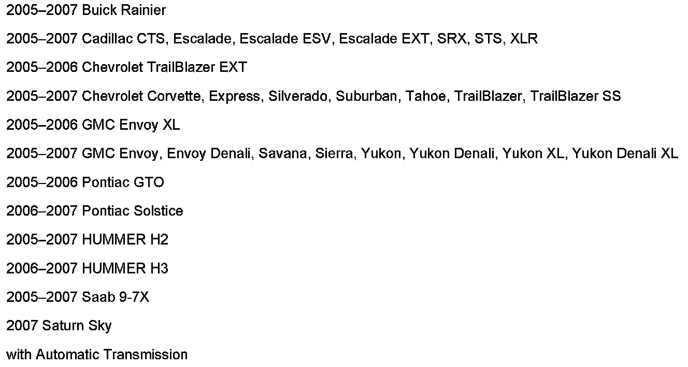

A/T - Cold Weather Shift Characteristics
Bulletin No.: 05-07-30-018ADate: January 11, 2007
INFORMATION
Subject:
1-2, 2-3, 3-4, 4-5 Shift and Torque Converter Clutch (TCC) Characteristics During Cold Weather Operation on 4L60-E, 4L65-E, 4L70-E, 4L80-E, 4L85-E, 5L40-E, 5L50-E, 6L50, 6L80, 6L90 or Allison(R) Transmissions

Models
Supercede:
This bulletin is being revised to add models and applicable transmissions. Please discard Corporate Bulletin Number 05-07-30-018 (Section 07 - Transmission/Transaxle).
On cold days, approximately 32°F (0°C) or colder, the transmission is designed to shift differently. The transmission uses a warm-up mode shift schedule until the engine reaches normal operating temperature. While the transmission is in warm-up mode, it is normal for transmission upshifts to be delayed or held longer. This feature improves heater performance by giving quicker vehicle warm-ups.

Disclaimer